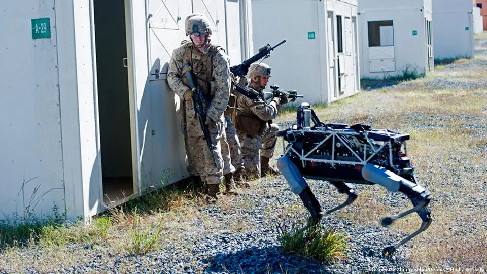

AI-Driven Combat : Redefining India's Military Strategy for the Future

Posted on Sept 24, 2024
Table of Contents
Highlights Key AI Concepts for Military Strategy: A Quick Overview<< /a> AI in Defense: A Game-Changer for India Autonomous Weapon Systems: The Future of Warfare AI’s Role in Surveillance and Cyber Warfare Challenges of AI Integration in Warfare AI-Driven Combat: Data Privacy and National Security Concerns India’s Path Forward: Recommendations Final thought: Call to Action References
Highlights
Artificial Intelligence (AI) is rapidly transforming military strategies worldwide. As nations like the U.S., China, and Russia are making significant advancements in AI-driven warfare, India cannot afford to lag behind. AI has the potential to revolutionize defense mechanisms through autonomous systems, real-time decision-making, and enhanced cybersecurity. This post explores how AI will reshape India's military landscape, improve operational efficiency, and introduce future warfare technologies that will change defense paradigms.
Key AI Concepts for Military Strategy: A Quick Overview
To grasp the future of AI-driven combat, it’s important to understand the core AI concepts transforming defense strategies
- Artificial Intelligence (AI): AI refers to machines or systems that mimic human intelligence to perform tasks, learn from experience, and improve over time. In military use, AI can automate decision-making, enhance surveillance, and improve combat strategies.
- Machine Learning (ML): ML is a subset of AI that allows computers to learn from data without being explicitly programmed. It helps military systems analyze large amounts of data, predict future outcomes, and improve decision-making based on patterns it learns.
- Deep Learning: A specialized form of ML, deep learning uses layers of artificial neural networks to process large datasets, such as satellite images or sensor data. In military scenarios, it enables automatic detection of objects, targets, or patterns within massive information streams.
- Neural Networks: Neural networks are systems modeled after the human brain, used in deep learning. These networks can recognize patterns in images, sound, and other data, making them ideal for tasks like object detection in battlefield environments.
- Autonomous Systems: These are AI-powered machines or vehicles that can operate with minimal human intervention. Examples include drones or robots used for surveillance, reconnaissance, or combat, making operations faster and reducing human risk.
- Natural Language Processing (NLP): NLP enables machines to understand and interact with human language. In military operations, it can be used to analyze communication, intelligence reports, or even intercept enemy transmissions to extract valuable information.
- Computer Vision: This field of AI helps machines interpret and understand visual information from the world, such as identifying objects, people, or activities in real-time. It's especially useful in military applications like drone surveillance or monitoring borders.
- Reinforcement Learning (RL): A type of ML where systems learn by trial and error. In military settings, RL can train systems to simulate combat scenarios and improve strategies by rewarding successful actions and penalizing failures.
- Robotics: In the context of AI, robotics involves designing autonomous machines capable of executing tasks such as battlefield navigation, search and rescue, or combat. AI-driven robots can operate in dangerous environments without risking human lives.
- Swarm Intelligence: Swarm intelligence involves coordinating groups of autonomous systems (such as drones) to work together like a team. In warfare, this could mean multiple AI-driven drones executing a coordinated mission with minimal human input.
India’s military modernization, especially with AI-powered systems, offers significant tactical advantages. AI’s integration into autonomous systems, decision-making processes, and surveillance operations is rapidly transforming how modern militaries engage in combat. From autonomous drones to intelligent decision-making systems, AI opens up numerous avenues for revolutionizing warfare.
AI in Defense: A Game-Changer for India
India’s military modernization, especially with AI-powered systems, offers significant tactical advantages. AI’s integration into autonomous systems, decision-making processes, and surveillance operations is rapidly transforming how modern militaries engage in combat. From autonomous drones to intelligent decision-making systems, AI opens up numerous avenues for revolutionizing warfare.
AI brings speed, precision, and efficiency to military operations. Traditional warfare relies heavily on human decisions and manual processes, while AI enables instant data processing and more accurate decision-making with minimal human intervention.
Comparison: Traditional Warfare vs. AI-Driven Warfare
| Feature | Traditional Warfare | AI-Driven Warfare |
|---|---|---|
| Speed of Decision Making | Dependent on human intervention | Real-time decision-making using AI algorithms |
| Risk to Human Life | High (reliance on human soldiers) | Lower (use of autonomous systems like drones) |
| Resource Allocation | Resource-heavy (manual deployment) | Optimized (AI manages logistics and operations) |
| Cybersecurity | Limited cybersecurity considerations | AI-driven proactive threat detection |
| Efficiency in Intelligence | Reactive | Predictive analytics for threat anticipation |
Autonomous Weapon Systems: The Future of Warfare
AI is central to the development of autonomous weapon systems, which can engage in combat with minimal or no human intervention. These systems are capable of processing massive amounts of data in real-time, improving the precision and lethality of attacks while reducing collateral damage. India's defense programs, like those involving unmanned aerial vehicles (UAVs) and robotic platforms, are already employing these technologies.
As AI technology advances, there is an increasing shift toward delegating authority to these systems. This has sparked an AI-driven arms race, highlighted by Russia's initiative to deploy remote-controlled and autonomous robotic platforms. While the United States has imposed restrictions on the use of autonomous systems with lethal capabilities, not all nations or non-state actors show the same level of caution. Citing examples from the Ukraine-Russia war, Lieutenant General J S Sidana, Commandant of MCEME and Colonel Commandant of the Corps of EME, highlighted the diverse applications of AI in the military, particularly in the maintenance and upkeep of military equipment, the deployment of autonomous systems, and the use of data analytics. He further emphasised on the need to harness other niche technologies to develop a technological edge over the adversary. MCEME has sowed the seeds of AI education by including AI in all courses.
Drone Technologies: Traditional military aircraft come with significant expenses, but advanced quadcopter unmanned aerial vehicles (UAVs) provide a more affordable alternative. The cost-effectiveness and long-range capabilities of these drones pose a challenge to existing military platforms.
Robotic Assassination: The rise of inexpensive, highly advanced autonomous robots raises the threat of widespread, covert, and hard-to-trace targeted killings. Autonomous sniper robots could engage targets from afar with lethal precision.
Mobile-Robotic Improvised Explosive Devices: The increasing availability of commercial robotic and autonomous vehicle technology could lead to more sophisticated improvised explosive devices. Long-range delivery systems, such as drones and self-driving cars, may make these weapons more accessible and deadly.
AI’s Role in Surveillance and Cyber Warfare
Another critical area where AI is making strides is in surveillance and cybersecurity. AI-powered surveillance systems can sift through massive datasets from satellite imagery, drones, and other sensors to provide real-time intelligence to decision-makers. In a world increasingly dominated by cyber warfare, AI helps by predicting and neutralizing cyber threats before they cause damage. Machine learning algorithms can sift through vast amounts of data from various sources, such as social media, video feeds, and communications, enabling the identification of patterns and behaviors of interest. Facial recognition, automated monitoring, and predictive analytics are examples of AI applications that help authorities track individuals and anticipate potential threats.
AI-based cyber defense systems constantly learn from new patterns of threats, making them more effective than traditional cybersecurity measures. For example, the Indian military can use AI to enhance its cyber defense capabilities by proactively detecting vulnerabilities in networks and responding to cyber-attacks swiftly.
The senior officials of the Indian Army are actively investigating the use of artificial intelligence (AI) to improve "mobility and protection," as stated by Army Chief General Manoj Pande at NDTV’s first Defence Summit. Pande highlighted that current AI initiatives encompass natural language processing, facial recognition, vehicle tracking, satellite imagery analysis, and various autonomous systems. Additionally, Pande emphasized that the Indian Army, in collaboration with subject matter experts, is formulating an AI roadmap projected to provide benefits for the next 20 to 25 years. This roadmap includes initiatives like the development of robotic surveillance platforms, autonomous combat vehicles, and manned-unmanned cleaning solutions. Moreover, a tri-services project is in progress to establish a high-powered computing AI cloud.
Challenges of AI Integration in Warfare
With the rise of AI-driven combat systems, ethical questions are emerging. Who is responsible when an autonomous system makes a fatal error? How do we ensure that AI does not spiral out of control? In 2022, debates about AI's role in warfare took center stage globally, especially concerning AI ethics in autonomous weapon systems.
India’s military, like others around the world, must grapple with these challenges as it seeks to modernize its forces with AI-driven technologies. Establishing clear ethical guidelines and a robust AI governance framework will be crucial to ensure these systems are used responsibly.
While the potential for AI in warfare is vast, its integration into defense systems is not without challenges:
- Ethics of AI in Warfare: Autonomous weapons raise serious ethical questions. Can machines be entrusted with life-and-death decisions? AI must be designed to adhere to international laws and avoid misuse.
- Cybersecurity Concerns: AI systems are vulnerable to cyber-attacks. If an AI-driven military system is hacked, it could lead to catastrophic outcomes. Strengthening AI’s cybersecurity defenses is paramount.
- Data Privacy and Sovereignty: AI models require large datasets for training, which can raise concerns about the privacy of sensitive defense data. India must ensure the data sovereignty of its military systems.
Benefits and Risks of AI in Warfare
| Aspect | Benefits | Risks |
|---|---|---|
| Decision Making | Faster, Real-Time Decision Support | Over-Reliance on AI, Errors in Judgment |
| Autonomous Weapons | Reduced Human Casualties, Enhanced Precision | Ethical Concerns, Lack of Human Oversight |
| Surveillance & Reconnaissance | Real-Time, Accurate Intelligence | Vulnerability to Cyber Attacks |
| Cybersecurity | AI-Powered Defense Against Cyber Threats | AI Systems Can Be Exploited if Hacked |
AI-Driven Combat: Data Privacy and National Security Concerns
AI's reliance on vast datasets, often collected from sensitive military or government operations, poses serious privacy risks. Ensuring data security while maintaining transparency will be critical to protect India's national security. AI-driven systems are also at risk of cyber-attacks, which could compromise military operations if not properly safeguarded.
India's defense strategy must prioritize cybersecurity to shield its AI-powered systems from malicious attacks. Developing protocols for secure data management and ensuring that data privacy remains paramount is essential to maintaining operational integrity.
India’s Path Forward: Recommendations
The future of warfare will increasingly be defined by how well nations integrate AI into their military strategies. India, with its strong technological capabilities and focus on innovation, is well-positioned to take a leading role in AI-driven combat. However, challenges related to AI ethics, data privacy, and cybersecurity must be addressed for AI to fully deliver on its promises.
India’s military modernization efforts, as part of initiatives like “Make in India,” aim to incorporate AI-driven solutions into defense manufacturing and R&D. AI will play a crucial role in supporting India’s shift toward self-reliance in defense, while also positioning the country as a global AI leader.
India must take proactive steps to integrate AI into its defense systems, investing in AI research, developing indigenous technologies, and training its defense personnel in AI operations. Collaborating with global tech giants, strengthening cybersecurity frameworks, and setting up AI ethics committees will further safeguard its strategic interests. India has a unique opportunity to harness AI, not just to compete with military superpowers but to lead the next generation of defense technologies.
Final thought: Call to Action
As AI reshapes warfare, it’s vital that India prepares itself for the battles of tomorrow. By investing in AI-driven solutions today, India can build a more secure, efficient, and advanced military capable of withstanding the complexities of future warfare.
In conclusion, the Indian Army’s foray into AI technology signifies a proactive approach to leverage modern advancements for enhancing operational capabilities. Through strategic planning and collaboration with experts, the Army is poised to integrate AI solutions across various domains, thereby bolstering its effectiveness and preparedness for future challenges. Similarly, international counterparts like the US Army are also exploring innovative applications of AI in military operations, showcasing the global trend towards leveraging cutting-edge technology for defense purposes.
References
[1] Yadav, U., & Sen, S. (2022). Emerging Technologies and
Indian Air Force Modernization Strategy. Amity
University, Noida.
(accessed Sept 20, 2024).
[2] Emerj-Ai-sector-overviews-AI in Military Drones and UAVs–Current Applications -Marcus Roth.
Visit Article
(accessed Sept 19, 2024).
[3] DH: Deccanherald- Army raises elite unit to work on critical tech development as nature of
warfare changes - Kalyan Ray DHNS.
Visit Article
(accessed Sept 19, 2024).
[4] IT Voice - The Indian Army is developing AI technology, autonomous combat vehicles, robotic
surveillance platforms, and other innovations - Harshit Mathur.
Visit Article
(accessed Sept 20, 2024).
[5] The New Indian Express - Seminar on ‘Artificial Intelligence for Military Applications’
held at
MCEME in Hyderabad.
Visit Article
(accessed Sept 20, 2024).
[6] Global Defence Technology - Case studies: artificial intelligence in the defence industry.
(2023).
Visit Article
(accessed Sept 20, 2024).
[7] SDI: Sentient Digital,INC. - The Most Useful Military Applications of AI in 2024 and
Beyond.
Visit
Article
(accessed Sept 21, 2024).
[8] Meduim.com -The Impact of AI and Autonomous Systems in Warfare-a case study. (2023) -
Helenjoy.
Visit
Article
(accessed Sept 21, 2024).